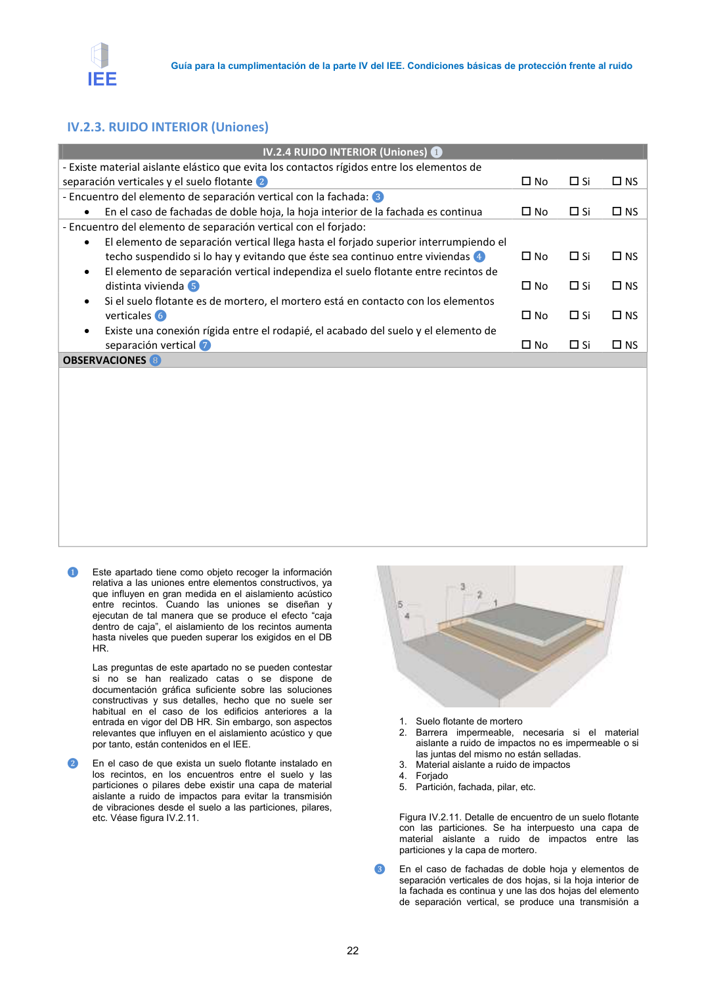

<!doctype html>
<html lang="es"><head><meta charset="utf-8">
<meta name="viewport" content="width=device-width, initial-scale=1">
<title>GUIA · p. 22 — Página 22</title><link rel="stylesheet" href="../estilo.css">
</head><body>
<nav><a href="../index.html">Índice</a> › <a href="../doc/guia-pdf-a5d4ef5252ba-2016-11-01-813669d3066c.html">GUIA</a> › p. 22</nav>

<header class="meta">
<p><strong>GUIA</strong> · Página 22 · versión 2016-11-01</p>
<p>SHA256: <code>813669d3066c0ff79457d57b80b0512a4fbb248bc5db1f7baf473c369a064738</code> · página física 22 de 65 · métodos de encabezado
solo si están cotejados.</p>
<p><a href="../doc/guia-pdf-a5d4ef5252ba-2016-11-01-813669d3066c.html">Documento</a> · <a href="guia-pdf-a5d4ef5252ba-2016-11-01-813669d3066c__p0021.html">← p. 21</a> · <a href="guia-pdf-a5d4ef5252ba-2016-11-01-813669d3066c__p0023.html">p. 23 →</a></p>
<p>Formatos: <a href="../../contenido/docs/GUIA-PDF-a5d4ef5252ba/2016-11-01__813669d3066c/pagina/p0022.md">Markdown</a> · <a href="../../contenido/docs/GUIA-PDF-a5d4ef5252ba/2016-11-01__813669d3066c/bloque/p0022.json">JSON de bloques</a> · <a href="../../contenido/docs/GUIA-PDF-a5d4ef5252ba/2016-11-01__813669d3066c/fuente.pdf#page=22">PDF p. 22</a> · <a href="../../contenido/docs/GUIA-PDF-a5d4ef5252ba/2016-11-01__813669d3066c/figura/p0022.png">imagen PNG</a></p>
</header>
<nav class="paginas"><a href="../doc/guia-pdf-a5d4ef5252ba-2016-11-01-813669d3066c.html">Documento</a> <a href="guia-pdf-a5d4ef5252ba-2016-11-01-813669d3066c__p0021.html">← p. 21</a> <a href="guia-pdf-a5d4ef5252ba-2016-11-01-813669d3066c__p0023.html">p. 23 →</a></nav>
<h2>Encabezado de la página</h2><ul><li>Sin encabezado de fuente cotejada en esta página.</li></ul>

<pre class="literal"> 
Guía para la cumplimentación de la parte IV del IEE. Condiciones básicas de protección frente al ruido 
 
22 
IV.2.3. RUIDO INTERIOR (Uniones) 
IV.2.4 RUIDO INTERIOR (Uniones) ❶ 
- Existe material aislante elástico que evita los contactos rígidos entre los elementos de 
separación verticales y el suelo flotante ❷ 
 No 
 Si 
 NS 
- Encuentro del elemento de separación vertical con la fachada: ❸ 
 
 
 
• 
En el caso de fachadas de doble hoja, la hoja interior de la fachada es continua 
 No 
 Si 
 NS 
- Encuentro del elemento de separación vertical con el forjado:  
 
 
 
• 
El elemento de separación vertical llega hasta el forjado superior interrumpiendo el 
techo suspendido si lo hay y evitando que éste sea continuo entre viviendas ❹ 
 No 
 Si 
 NS 
• 
El elemento de separación vertical independiza el suelo flotante entre recintos de 
distinta vivienda ❺ 
 No 
 Si 
 NS 
• 
Si el suelo flotante es de mortero, el mortero está en contacto con los elementos 
verticales ❻ 
 No 
 Si 
 NS 
• 
Existe una conexión rígida entre el rodapié, el acabado del suelo y el elemento de 
separación vertical ❼ 
 No 
 Si 
 NS 
OBSERVACIONES ❽ 
 
 
 
 
 
 
 
 
 
❶ 
Este apartado tiene como objeto recoger la información 
relativa a las uniones entre elementos constructivos, ya 
que influyen en gran medida en el aislamiento acústico 
entre recintos. Cuando las uniones se diseñan y 
ejecutan de tal manera que se produce el efecto “caja 
dentro de caja”, el aislamiento de los recintos aumenta 
hasta niveles que pueden superar los exigidos en el DB 
HR.  
Las preguntas de este apartado no se pueden contestar 
si no se han realizado catas o se dispone de 
documentación gráfica suficiente sobre las soluciones 
constructivas y sus detalles, hecho que no suele ser 
habitual en el caso de los edificios anteriores a la 
entrada en vigor del DB HR. Sin embargo, son aspectos 
relevantes que influyen en el aislamiento acústico y que 
por tanto, están contenidos en el IEE. 
❷ 
En el caso de que exista un suelo flotante instalado en 
los recintos, en los encuentros entre el suelo y las 
particiones o pilares debe existir una capa de material 
aislante a ruido de impactos para evitar la transmisión 
de vibraciones desde el suelo a las particiones, pilares, 
etc. Véase figura IV.2.11.  
 
1. Suelo flotante de mortero 
2. Barrera impermeable, necesaria si el material 
aislante a ruido de impactos no es impermeable o si 
las juntas del mismo no están selladas. 
3. Material aislante a ruido de impactos 
4. Forjado 
5. Partición, fachada, pilar, etc.  
 
Figura IV.2.11. Detalle de encuentro de un suelo flotante 
con las particiones. Se ha interpuesto una capa de 
material aislante a ruido de impactos entre las 
particiones y la capa de mortero. 
❸ 
En el caso de fachadas de doble hoja y elementos de 
separación verticales de dos hojas, si la hoja interior de 
la fachada es continua y une las dos hojas del elemento 
de separación vertical, se produce una transmisión a 
</pre>
<figure><a href="../../contenido/docs/GUIA-PDF-a5d4ef5252ba/2016-11-01__813669d3066c/figura/p0022.png"></a><figcaption>Imagen de la página 22 (PNG ya extraído; prevalece sobre fórmulas).</figcaption></figure>
<h2>Tablas candidatas de esta página</h2><ul><li><a href="../../contenido/docs/GUIA-PDF-a5d4ef5252ba/2016-11-01__813669d3066c/tabla/p0022_t01.json">p0022_t01.json</a> · <a href="../../contenido/docs/GUIA-PDF-a5d4ef5252ba/2016-11-01__813669d3066c/tabla/p0022_t01.csv">.csv</a> (6 × 3; candidata, no reconstruida aquí)</li></ul>
<h2>Referencias, notas y excepciones (página y vecinas)</h2><ul><li><a href="../apartado/guia-pdf-a5d4ef5252ba-2016-11-01-813669d3066c__a0015.html">ID a0015 · IV.2.3. RUIDO INTERIOR (Uniones)</a></li></ul>
<h2>Apartados que incluyen esta página</h2><ul><li><a href="../apartado/guia-pdf-a5d4ef5252ba-2016-11-01-813669d3066c__a0014.html">ID a0014 · IV.2.3. RUIDO INTERIOR (Particiones horizontales)</a></li><li><a href="../apartado/guia-pdf-a5d4ef5252ba-2016-11-01-813669d3066c__a0015.html">ID a0015 · IV.2.3. RUIDO INTERIOR (Uniones)</a></li></ul>

<footer>Generado estáticamente desde JSON normalizado; sin JavaScript ni servicios externos.
El JSON es la fuente; este HTML es caché reproducible.</footer>
</body></html>
